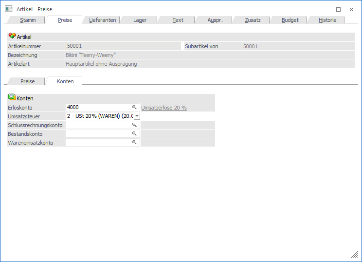
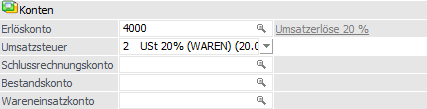

In dem Unterregister "Konten" können u.a. die Sachkonten für die WinLine FIBU-Übergabe, sowie die Umsatzsteuerzuordnung, hinterlegt werden.

Folgende Eingabefelder, Einstellungen und Informationen stehen zur Verfügung:
Konten

Ø Erlöskonto
An dieser Stelle wird das Erlöskonto hinterlegt, welches für die automatische Erstellung der Buchungssätze (Verkaufsbelege) für die WinLine FIBU benötigt wird. Das Konto muss zuvor in der Finanzbuchhaltung definiert worden sein, um eine korrekte Buchungsübergabe zu gewährleisten.
Hinweis
Bei dem Erlöskonto handelt es sich auch um das "Standardkonto" des Artikels. D.h. wenn in den Felder "Bestandskonto" und / oder "Wareneinsatzkonto" keine Hinterlegung getroffen wurde, dann wird WinLine das Konto aus diesem Feld für die Ermittlung des z.B. Einkaufkonto heranziehen. Hierbei gilt immer, dass dieses Konto über die sogenannte "Maskierung" der Belegart übersteuert werden kann (nähere Informationen zur Maskierung entnehmen Sie bitte dem Kapitel Belegartenstamm).
Achtung
Auch wenn keine automatische Buchungsübergabe erfolgen soll, so muss ein Erlöskonto hinterlegt werden! Sollte kein Konto angegeben werden, so wird die WinLine automatisch das Konto "8000" verwenden.
Ø Umsatzsteuer
An dieser Stelle kann über eine Auswahlbox dem Artikel der Umsatzsteuersatz zugewiesen werden. Die sogenannte Steuerzeile muss hierbei vorher im Unternehmensstamm angelegt werden.
Hinweis
Bei der Hinterlegung von "0 - Steuersperre" wird das Programm immer aktuellen im Unternehmensstamm nach der ersten Steuerzeile mit 0% Steuer suchen und diese (z.B. bei der Belegerfassung) verwenden.
Achtung
Wenn das hinterlegte Erlöskonto "ohne Steuer" definiert wurde, so darf auch hier nur eine Steuerzeile mit 0% Steuer angesprochen werden.
Ø Schlussrechnungskonto
An dieser Stelle wird das Schlussrechnungskonto für die automatische Erstellung der Buchungssätze eingetragen. Dieses wird herangezogen, wenn in der Projektbearbeitung eine Schlussrechnung für "Abschlagsrechnungen/Werte" gedruckt wird. Hierbei ist zu beachten, dass dieses Konto als Sachkonto definiert sein muss, um eine korrekte Buchungsübergabe zu gewährleisten.
Ø Bestandskonto
In dieses Feld kann das Einkaufskonto (Einkaufsbelege) bzw. das Bestandskonto (Wareneinsatzbuchung bei Verkaufsbelegen) hinterlegt werden, welches für die automatische Erstellung der Buchungssätze für die WinLine FIBU benötigt wird.
Achtung
Ist das Feld "Bestandskonto" leer, so wird die Hinterlegung aus dem "Erlöskonto" (für die Erzeugung der Buchungssätze) verwendet.
Hinweis
Ob eine Wareneinsatzbuchung erfolgen soll ist abhängig von der Belegart (Register "Fibu / Kore") und der Artikelstamm-Option "Bestandsbuchung" (Register "Lager" - Unterregister "Einstellungen").
Ø Wareneinsatzkonto
In dieses Feld kann das Wareneinsatzkonto (Wareneinsatzbuchung bei Verkaufsbelegen) hinterlegt werden, welches für die automatische Erstellung der Buchungssätze für die WinLine FIBU benötigt wird.
Achtung
Ist das Feld "Wareneinsatzkonto" leer, so wird die Hinterlegung aus dem "Erlöskonto" (für die Erzeugung der Buchungssätze) verwendet.
Hinweis
Ob eine Wareneinsatzbuchung erfolgen soll ist abhängig von der Belegart (Register "Fibu / Kore") und der Artikelstamm-Option "Bestandsbuchung" (Register "Lager" - Unterregister "Einstellungen").